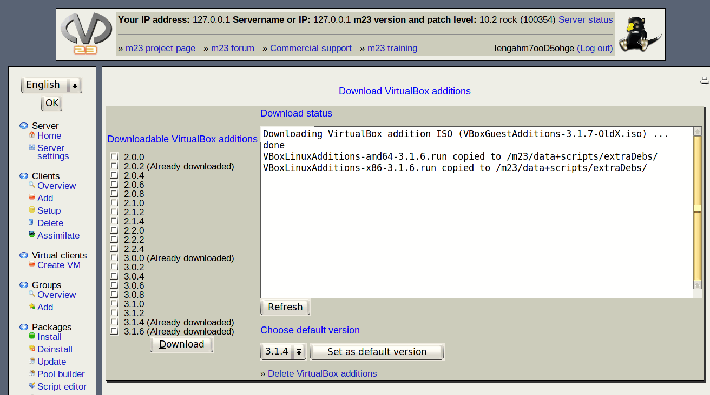

This page helps you to download the VirtualBox additions, that will be installed on m23 clients (that are installed into Virtualbox itself) automatically. The installation of these additions enhances the the input and output between the guest and host. To get an optimal interaction between guest and host, the VirtualBox version and the version of the addition should be equal. An m23 client installed into VirtualBox will try to fetch the addition from the internet, if it cannot be downloaded from the m23 server. You can choose a default addition version on this page too, that will be used, if the client could not determine the current VirtualBox version.

Subsections
root
2019-07-18